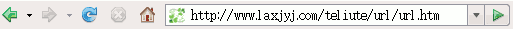

Nvu 操作基础教程
作者：Teliute 来源：基础教程网
上网基础 返回目录 下一课
学习做网页之前，我们首先要知道网页是什么，一般来说网页是用在网络上的htm文件，通过网页可以很方便的实现网络资源的共享，上网分为三个步骤；
1、输入正确的网址
1）在上面板栏里找到Firefox图标点击打开，出现浏览器窗口，一般会自动进入主页的网站；
2）找到地址栏一个长白条，里面有一串英文字母，后头是“转到”按钮，这就是地址栏；

3）在地址栏里头点一下鼠标左键，然后删除里面的字符，输入自己的的网址，网址一般是英文的以http打头，然后是一个冒号和两个斜杠（双斜杠），
然后是www（三W），后面跟一个点，最后一般是com结尾，例如输入http://www.baidu.com
检查一下，没问题就按一下回车键，或者点一下后边的绿色“转到”按钮，这时窗口右上角的小图标就开始运动，也就是正在连接；
4）一切正常就会进入到百度搜索的首页；
2、找超级链接
1）网页上的内容是一页一页的，一般都藏在一个叫超链接的后面，所以第二步就是要找到超链接；
2）超链接有三个特点，文字是蓝色的，下面有一条下划线，最关键的是当鼠标移过去以后，指针会变成手形；
3）找到超链接以后就可以鼠标左键单击，进入相应的内容了；
3、后退按钮
1）看完一页后如何返回呢？在窗口的左上角有一个后退按钮，点一下就可以回到上一页，这样就不会迷失方向；
本节学习了上网的基础知识，学习了上网的三步曲，网址、超链接和后退，如果你成功地理解并完成了练习，请继续学习下一课内容；
返回目录 下一课
本教程由86团学校TeliuTe制作|著作权所有
基础教程网：http://teliute.org/
美丽的校园……
转载和引用本站内容，请保留版权信息和本站链接。